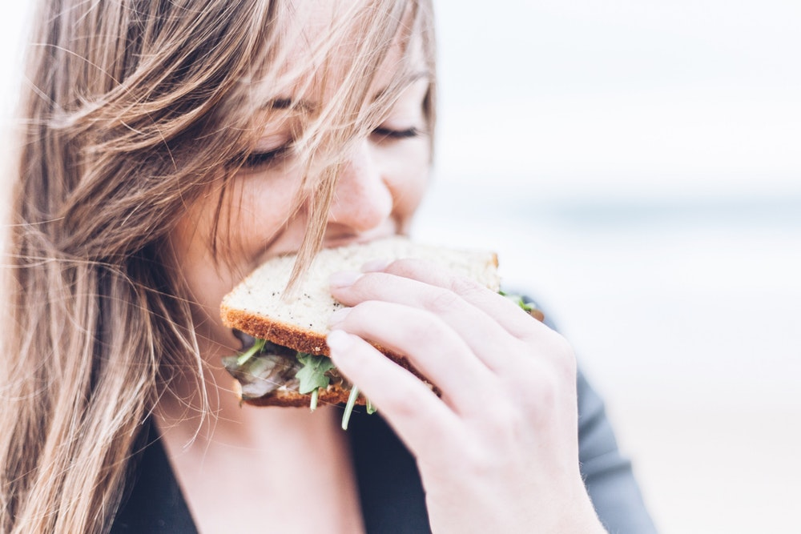

Être obsédé par son poids, ça fait grossir! Stress, manque de sommeil, déprime... Au quotidien, les « trucs qui font grossir » sont nombreux. Et, même lorsqu'on surveille attentivement le contenu de son assiette, il est possible de gagner quelques kilos ! L'obsession minceur elle-même est néfaste pour la silhouette. Ainsi, comme l'explique Raphaël Gruman, diététicien-nutritionniste : « Le fait d'être obsédé par son poids engendre un stress supplémentaire au quotidien. Or, ce stress se traduit par la production d'une hormone spécifique (le cortisol) qui va favoriser le stockage des graisses dans les cellules ». Pire : la déprime liée à la prise de poids, quant à elle, fait chuter le taux de sérotonine (l'hormone du bien-être)... et nous pousse à la compulsion alimentaire. Et on grossit !
Alors soyez ZEN...
Voici une liste de régimes les mieux notés
On ne le répétera jamais assez : pour maigrir durablement, il ne suffit pas de rééquilibrer son alimentationle rééquilibrage alimentaire, il faut aussi exercer une activité physique régulière. Pour être en bonne santé, l’O.M.S. (Organisation Mondiale de la Santé) recommande de pratiquer l’équivalent d’au moins 30 minutes de marche rapide par jour. En bougeant, on améliore sa condition physique et sa qualité de vie.